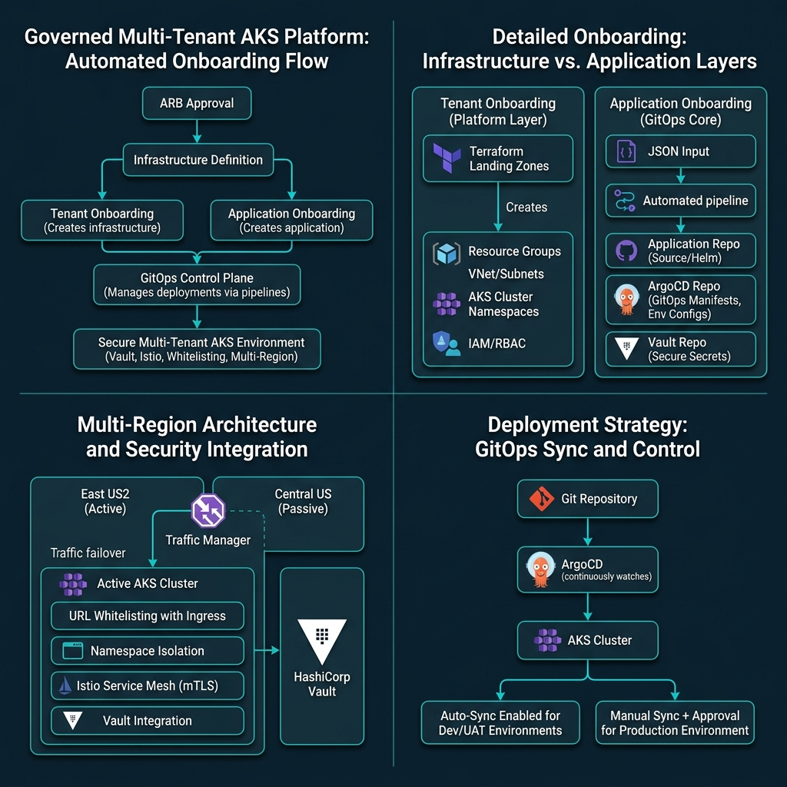
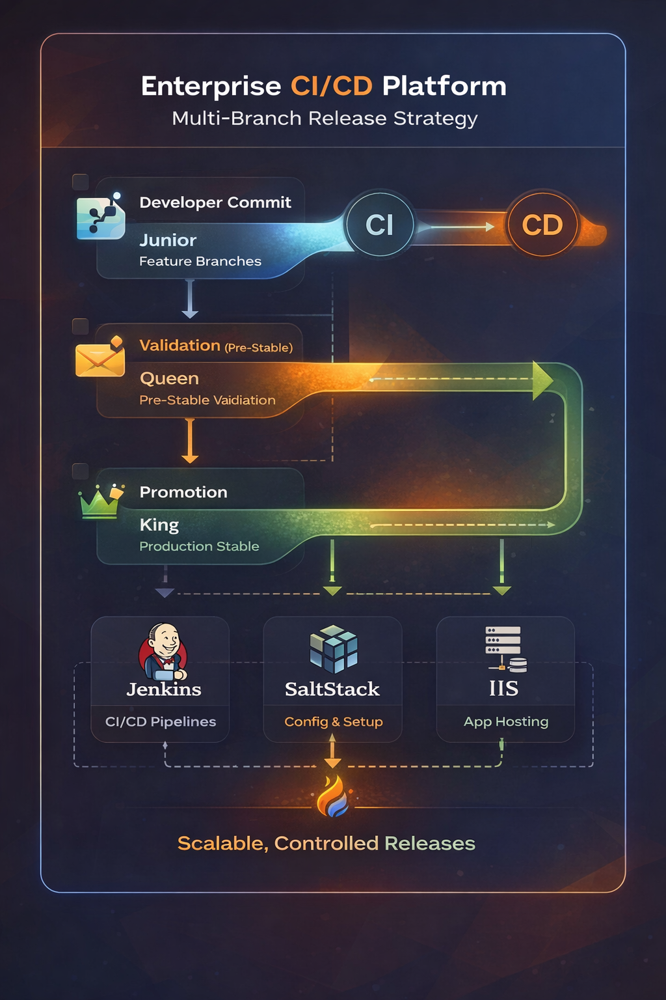
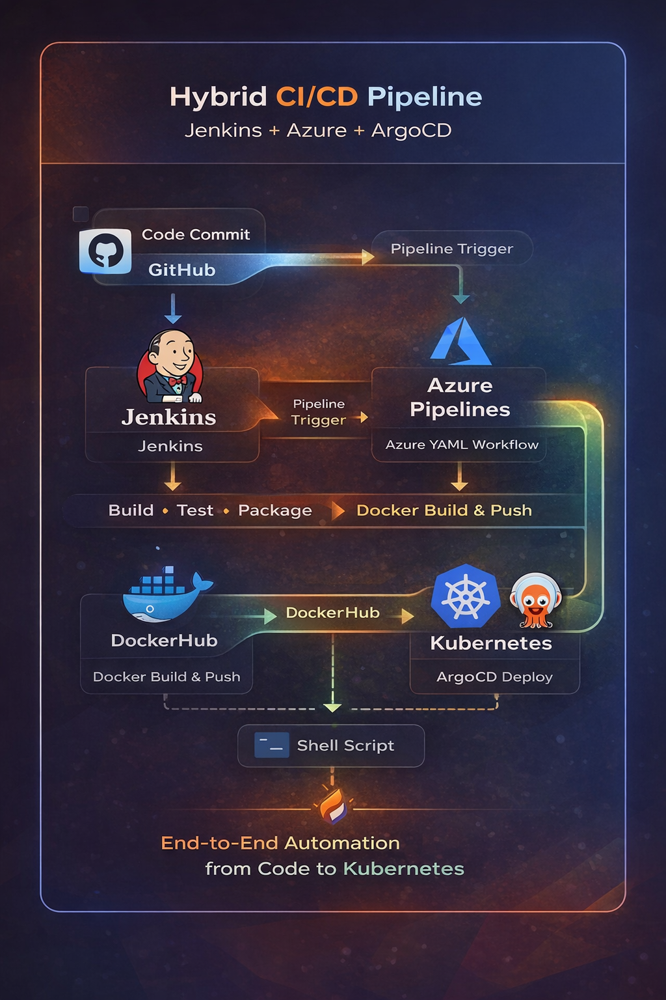
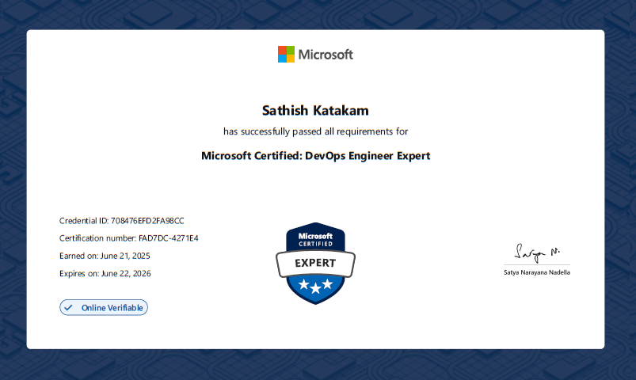

AI Road Map — Beginner to Expert
End-to-end roadmap to transition from DevOps to AI/MLOps with structured learning path and real projects.
Click to Read
Hey there! 👋 I'm Sathish Katakam, a passionate DevOps & Cloud Engineer with 6+ years of experience building and maintaining resilient, scalable infrastructure. I thrive at the intersection of development and operations, turning complex systems into smooth, automated pipelines.
I specialize in orchestrating containerized workloads with Kubernetes, automating cloud infrastructure with Terraform, and designing CI/CD pipelines that ship code fast and safely. My philosophy: if you're doing it twice, automate it.
I’m an enthusiastic learner who constantly explores new technologies, automates repetitive tasks, and enjoys deep debugging to solve complex problems. I’m passionate about cloud-native ecosystems and continuously experiment to build efficient, scalable solutions. I’m always open to exciting projects and collaborations — let’s build something impactful together.
Designing and implementing end-to-end CI/CD pipelines, infrastructure automation, and deployment strategies for high-traffic systems.
Architecting multi-cloud solutions on AWS, GCP, and Azure. Optimizing for performance, cost, and security at scale.
Ensuring 99.99% uptime through SLOs, SLAs, error budgets, chaos engineering, and proactive monitoring strategies.
Writing production-grade Terraform, Ansible, and Helm charts to provision and manage cloud resources declaratively.
Work History
Led infrastructure and CI/CD optimization across 20+ AKS workloads and 20+ clusters (300+ nodes). Reduced deployment time by 30% and improved success rate by 40% through pipeline redesign and automation. Built Terraform-based landing zones and standardized Helm deployments across multi-environment platforms (Dev–Prod). Implemented GitOps using ArgoCD, reducing manual effort by 60%. Architected multi-region (East US2–Central US) Kubernetes platform supporting 20+ LOBs and 200K+ daily requests. Improved reliability by reducing downtime 25% and cutting incident resolution time through RCA and platform stabilization. Optimized cloud costs by ~15% via resource cleanup and utilization improvements.
Built Jenkins CI/CD pipelines, reducing manual effort by 50% and improving release reliability. Automated deployments and developed Bash/Go tooling, increasing team productivity by 70%. Managed configuration with SaltStack and led Oracle upgrades (12c→19c) with minimal downtime. Owned P1/P2 incident resolution and improved system stability. Mentored engineers on DevOps and CI/CD best practices.
Provisioned AWS infrastructure with Terraform, reducing provisioning time by 50% and cutting costs by 20% through cloud migration. Built Jenkins CI/CD pipelines, reducing deployment time by 40% and improving release reliability. Implemented CloudWatch monitoring to enhance incident detection. Managed Git (Gitolite, Gerrit) to streamline collaboration and reduce conflicts.
Maintained >99% SLA for P1/P2 incidents with minimal escalations through strong L3 production support. Improved application performance by 25% by upgrading JBoss and Java. Built Spring Batch components for large-scale data processing. Automated monitoring using shell scripting and Grafana, improving issue detection by 30%.
Academic Background







End-to-end roadmap to transition from DevOps to AI/MLOps with structured learning path and real projects.
Click to Read